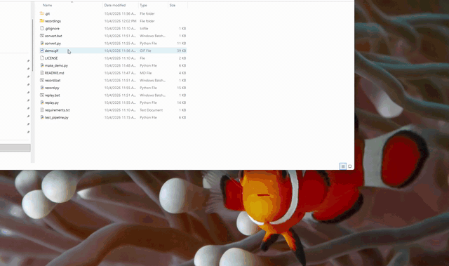

01 / Intro
Ayush Shrestha
Software Developer Warehouse Automation & Enterprise Systems
- Skokie, IL
- C# / .NET / SQL
- Fleet robotics
Scroll to disassemble
Ayush Shrestha
Preparing the sequence
0%
01 / Intro
Software Developer Warehouse Automation & Enterprise Systems
Scroll to disassemble
02 / WMS & Database Performance
03 / ERP & Fleet Transitions
04 / Personal Focus
05 / What I do
Each one runs on the same foundation: deterministic systems that stay up at 3am, integrated cleanly with what you already have.
Warehouse automation
Live warehouse management software that coordinates stock and autonomous fleets without stopping the floor.
Enterprise integration
Getting a warehouse system to speak to the ERP you already run — cleanly, verifiably, and without a rewrite.
Applied AI
Learning how AI works by building small things with it and seeing where it helps across different kinds of problems.
06 / Projects
A few things I've built — each one solving a real problem with clean, maintainable code.

Side project
A lightweight browser extension for recording and replaying browsing sessions. Capture full interactions — clicks, scrolls, form inputs — and play them back for testing, demos, or documentation.
06 / Contact
Open to exciting opportunities and interesting problems, wherever they are.